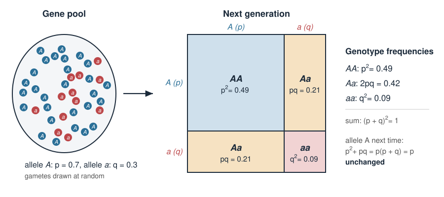
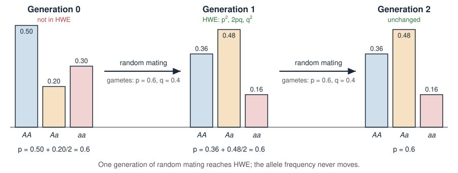
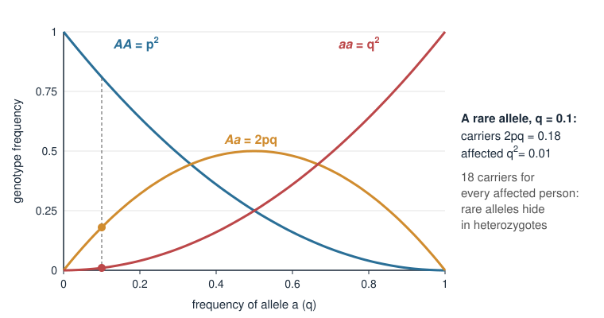
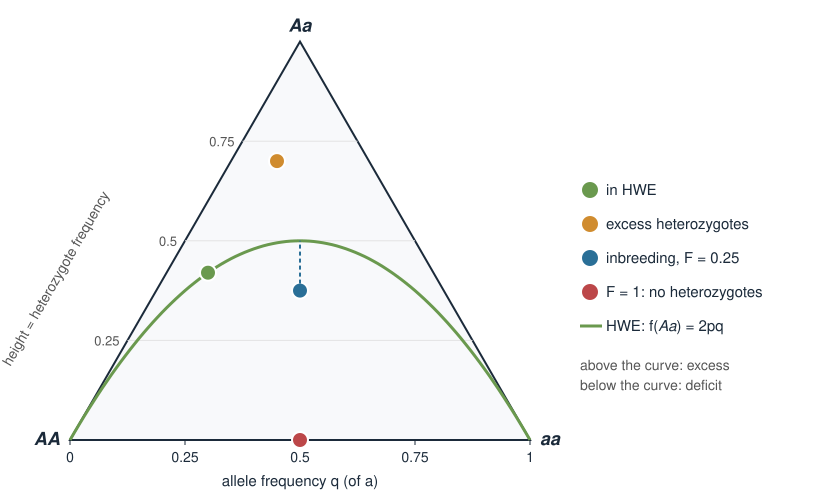
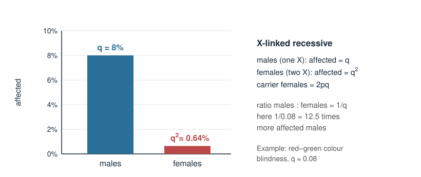

So far we followed alleles through one family. Now we follow them through a whole population: what fraction of people carry each allele and each genotype?
Allele and genotype frequencies, and how to count them.
The Hardy–Weinberg principle, derived step by step: random mating turns allele frequencies p and q into genotype frequencies p², 2pq, q², and keeps them there.
Its assumptions, and the χ² test for HWE (df = 1), worked through on real data.
The de Finetti triangle, a picture of all possible populations.
Uses: carrier frequencies from disease incidence (the 1/50 from the pedigrees unit), X-linked traits, and inbreeding (F), with the common mistakes to avoid.
Book: Hartwell, the population genetics chapter. You need the product rule and the χ² test from Part 1.
Allele and genotype frequencies
The MN blood group has two codominant alleles, M and N, so every genotype can be seen. A classic textbook sample of 6129 people:
MM
MN
NN
total
count
1787
3039
1303
6129
genotype frequency
0.292
0.496
0.213
1
Allele frequencies: count alleles, two per person.
Shortcut: p = f(MM) + ½ f(MN) = 0.292 + 0.248 = 0.540.
Step 1: from genotypes to the gene pool
Take a population that is not in equilibrium: 50% AA, 20% Aa, 30% aa. Which gametes does it make?
Parent genotype
frequency
gametes it makes
contributes A
contributes a
AA
0.50
all A
0.50
0
Aa
0.20
½ A, ½ a (Mendel’s first law)
0.10
0.10
aa
0.30
all a
0
0.30
gene pool
p = 0.60
q = 0.40
The gamete frequencies are the allele frequencies: p = f(AA) + ½ f(Aa).
Step 2: random union of gametes

If gametes meet at random, an egg carrying A (probability p) meets a sperm carrying A (probability p) with probability p², by the product rule.
Aa arises in two ways (A egg + a sperm, or a egg + A sperm): pq + qp = 2pq.
So the genotype frequencies are p² : 2pq : q², and they add up to (p + q)² = 1. In our example: 0.6² = 0.36, 2 × 0.6 × 0.4 = 0.48, 0.4² = 0.16.
Step 3: the allele frequency does not change
Count the A alleles in the new generation, as in step 1:
p' = f(AA) + \tfrac{1}{2} f(Aa) = p^2 + \tfrac{1}{2}\cdot 2pq = p\,(p + q) = p.
In numbers: p′ = 0.36 + 0.48/2 = 0.36 + 0.24 = 0.60, the same as before.
So the gene pool of the next generation is the same, and so are its genotype frequencies: the population has reached an equilibrium.
Segregation is fair: each heterozygote passes on A and a equally often, and nothing in Mendel’s laws favours the dominant allele.
One generation is enough

Generation 0 had too few heterozygotes (0.20 instead of 0.48). After one round of random mating the genotypes are at p², 2pq, q² and stay there.
The starting genotype frequencies do not matter, only p. This is why many real loci sit close to HWE even when the population’s history was messy.
The Hardy–Weinberg principle
In a large, randomly mating population with no selection, mutation or migration:
Genotype frequencies are p², 2pq, q², after one generation of random mating, whatever they were before (step 2).
Allele and genotype frequencies then stay constant from generation to generation (step 3).
Note what it does not say:
It does not say p = q = 0.5. Any p can be in equilibrium.
It does not say a dominant allele becomes common. Dominance affects phenotypes, not allele frequencies.
It is a null model: like 3:1 in a cross, it is what we test against.
Rare alleles hide in heterozygotes

For a rare allele, almost all copies are in heterozygotes: at q = 0.1 there are 18 carriers for every aa person; at q = 0.01, about 200.
So selection against a rare recessive phenotype removes very few copies. This is why recessive disease alleles persist (next unit).
Heterozygote frequency 2pq is highest, 0.5, at p = q = 0.5.
When heterozygotes are hidden: start from aa
With complete dominance, AA and Aa look the same, so we cannot count alleles directly. Only aa is visible. If we assume HWE:
f(aa) = q^2 \;\Rightarrow\; q = \sqrt{f(aa)}.
Example: 16% of a population show a recessive phenotype.
q = √0.16 = 0.4, so p = 0.6.
AA = 0.36, Aa = 0.48: together the 84% with the dominant phenotype.
Fraction of dominant-phenotype people who are carriers: 0.48 / 0.84 = 0.57.
Caution: here HWE is an assumption, not a result. With only two visible classes there is no degree of freedom left to test it.
The assumptions
Assumption
If it fails
Covered in
Random mating
inbreeding or assortative mating changes genotype frequencies (not p)
today
Large population
drift: p changes by chance
Drift, selection
No selection
genotypes survive or reproduce differently
Drift, selection
No mutation
new alleles enter
Drift, selection
No migration
alleles enter from another population
Drift, selection
(One population)
pooled samples show a deficit of heterozygotes (Wahlund effect)
today
In real human populations these are rarely all true, yet most loci are close to HWE: the forces are weak at most loci, and one generation of random mating restores the proportions.
χ² test for HWE, step 1: expected counts
TCF7L2 SNP rs7903146 in 99 people of north-west European ancestry (CEU, 1000 Genomes): 52 CC, 32 CT, 15 TT. Is this sample in HWE?
1a. Estimate p from the data (count alleles): p = (2 × 52 + 32)/198 = 136/198 = 0.687, q = 0.313.
1b. Expected counts = N × HWE frequency:
CC
CT
TT
total
HWE frequency
p² = 0.472
2pq = 0.430
q² = 0.098
1
expected E
99 × 0.472 = 46.7
99 × 0.430 = 42.6
99 × 0.098 = 9.7
99
observed O
52
32
15
99
Check: the expected counts add up to N.
χ² test, step 2: the statistic and its degrees of freedom
CC
CT
TT
O − E
52 − 46.7 = 5.3
32 − 42.6 = −10.6
15 − 9.7 = 5.3
(O − E)²/E
0.60
2.63
2.89
χ² = 0.60 + 2.63 + 2.89 = 6.1
df = 3 − 1 − 1 = 1:
3 classes,
− 1 because the counts must add up to N,
− 1 because p was estimated from the same data.
Critical value at 5% with df = 1: 3.84. (With df = 2 it would be 5.99: using the wrong df changes the decision for χ² between 3.84 and 5.99.)
χ² test, step 3: decide, and interpret
χ² = 6.1 > 3.84, p = 0.013: reject HWE at the 5% level.
Direction: fewer heterozygotes than expected. F = 1 − Hobs/Hexp = 1 − (32/99)/0.430 = 0.25.
A useful check: for the HWE test, χ² = NF² = 99 × 0.25² ≈ 6.1.
But is this population really out of HWE? Probably not:
In the R exercise we test 15 SNP–population pairs. At the 5% level we expect 15 × 0.05 ≈ 0.75 false rejections, so one p ≈ 0.01 is roughly what chance gives.
A real biological cause (inbreeding, structure) would affect all loci, not one.
This is the multiple-testing problem; it returns with the 5 × 10⁻⁸ threshold in GWAS.
The de Finetti triangle

Every population is a point: horizontal position = q, height = frequency of Aa. The corners are pure AA, pure Aa and pure aa.
Populations in HWE lie on the parabolaf(Aa) = 2pq.
Below the parabola: too few heterozygotes (inbreeding, population structure). Above: too many (heterozygote advantage, mixing of two distinct populations in one generation, genotyping errors).
Demo: the de Finetti triangle
Real data: sickle-cell genotypes
HBB rs334 (HbS) in 1000 Genomes, via Ensembl:
Population
AA
AS
SS
q(S)
expected SS
Yoruba (YRI)
78
30
0
0.139
2.1
Gambian (GWD)
87
26
0
0.115
1.5
gnomAD v4 genomes, African/African-American group: allele frequency 0.044 in about 20 800 people; HWE predicts about 39SS homozygotes, gnomAD reports 9.
SS people (sickle-cell disease) are missing from samples of healthy adults: selection acts on genotypes, so HWE fails for this locus among adults.
The χ² test is weak here: the expected counts are small (< 5). The direction is still informative.
Why is HbS common at all? Heterozygote advantage against malaria: next unit.
Population structure: the Wahlund effect
SLC24A5 rs1426654 (a pigmentation SNP): the A allele is almost fixed in Europe and rare in Africa.
Sample
AA
AG
GG
F
Gambian (GWD)
1
15
97
0.05, in HWE
All 26 populations pooled (2504 people)
892
408
1204
0.67
Each population on its own is close to HWE. Pooling populations with different p gives far too few heterozygotes.
No inbreeding is involved: people mate within populations, so the pooled “population” does not mate at random.
Lesson: test HWE within a population, and remember that hidden structure looks like inbreeding.
X-linked genes

Males are hemizygous: the frequency of affected males is the allele frequency q.
Females follow HWE: q² affected, 2pq carriers.
So an X-linked recessive trait is about 1/q times more common in males. For red–green colour blindness (q ≈ 0.08), about 8% of men but under 1% of women.
Carrier frequency from disease incidence
The pedigrees unit assumed a carrier frequency of 1/50 for PKU. Where does it come from?
For a rare allele, carrier frequency ≈ 2q = 2√incidence.
Cystic fibrosis in north-west Europe, incidence about 1 in 2500 births: q ≈ 1/50, carriers ≈ 1/26.
Check in gnomAD: CFTR F508del (rs113993960) has allele frequency 0.014 in non-Finnish Europeans (carriers ≈ 1/35; F508del is not the only CF allele), but only 0.0015 in Finns.
Inbreeding: where the formulas come from
F = the probability that the two alleles in a person are identical by descent (IBD): copies of one ancestral allele. Build f(aa) in two cases:
Case
probability
P(aa) in this case
contribution
the two alleles are IBD: really one allele, copied
df = 1: one more is lost because p is estimated from the data
Expected counts from 1 : 2 : 1
expected counts from the sample’s own p: Np², 2Npq, Nq²
“Dominant alleles become common”
dominance changes phenotypes, not transmission: p stays constant
X-linked: males affected at q²
males are hemizygous: affected males = q; females q²
A heterozygote deficit proves inbreeding
it can also be structure (Wahlund), selection, or genotyping error
What HWE is used for
Estimating carrier frequencies for genetic counselling and screening.
Checking data: in genome-wide genotyping, SNPs that depart strongly from HWE in healthy controls are often genotyping errors and are removed before a GWAS.
Detecting forces: departures point to selection, population structure or inbreeding.
A starting point for population genetics: the next unit asks what happens when the assumptions fail.
Summary
Allele frequency: count gene copies, p = f(AA) + ½ f(Aa).
Derivation: gene pool (p) → random union of gametes (product rule) → p², 2pq, q² in one generation, with p constant. Dominance does not change allele frequencies.
Assumptions: random mating, large population, no selection, mutation or migration, one population.
With complete dominance, q = √f(aa), assuming HWE.
χ² test for HWE: expected counts from the estimated p, df = 1; interpret with multiple testing in mind.
Rare alleles are mostly in carriers: carrier frequency ≈ 2√incidence (PKU: 1/10 000 → 1/50).
X-linked: males affected at q, females at q².
Inbreeding (F: aa = q² + Fpq) and population structure (Wahlund) both give a heterozygote deficit; heterozygote advantage can give an excess.
Where this leads
Next: Drift, selection, mutation, migration: what happens to p when the assumptions fail, including why HbS is common where malaria is.
Complex traits: HWE filters in GWAS quality control; population structure as a source of false associations.
In the exercise: HWE by hand, the de Finetti demo, real genotype counts from 1000 Genomes and gnomAD, and an hwe_test() function in R applied to many SNPs with pmap.